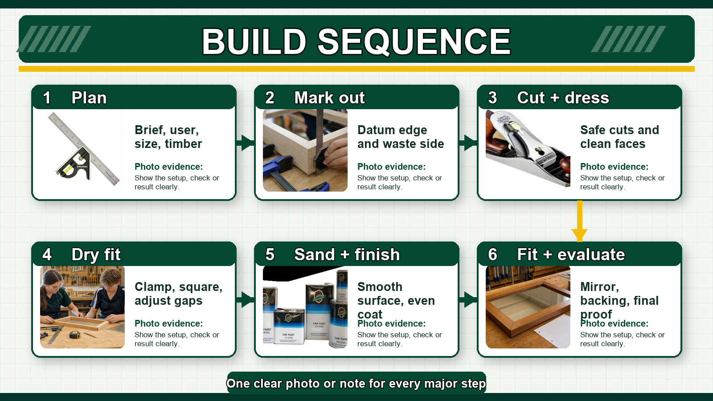
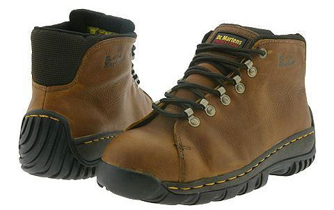
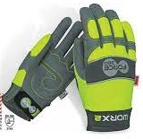
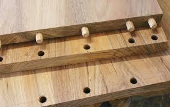
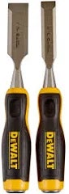

Real Workshop References
Mirror Project Visual Gallery
Use these images as practical reference points for the mirror project. They show real PPE, tools, timber, joints and finishing materials rather than invented construction details.
Mirror Project
Realistic Project Photos
Use these as visual anchors for the mirror build process: dry fit, accuracy checking and final evaluation evidence.


Teaching Visuals
Mirror Project Infographics
These match the high-level Engineering site style: quick, visual, evidence-based and easy to use during lessons.




Visual Set 1
Safety And PPE
These images support the safety routines students need before cutting, sanding, routing or using finishes.





Visual Set 2
Measuring And Marking Out
Accurate measuring and square marking out are what stop a frame from becoming a crooked headache.


Visual Set 3
Timber And Preparation
These references help students talk about stock selection, grain, defects, clamping and surface preparation.


Visual Set 4
Joinery References
These images support discussion of common timber joints. The final project joint choice still depends on the teacher demonstration and class build method.






Visual Set 5
Routing And Frame Details
Router work needs teacher setup, a test cut and controlled feed direction before students touch the real frame.


Visual Set 6
Finishing
The finish should suit the timber, protect the surface and be applied safely with ventilation and tidy cleanup.